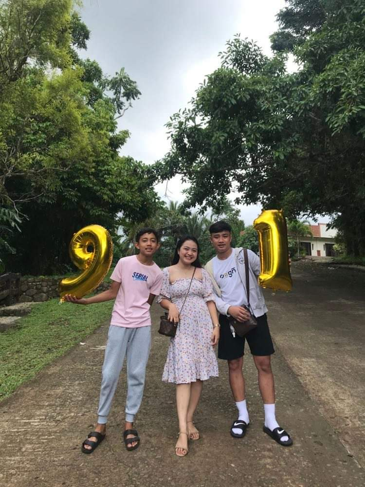
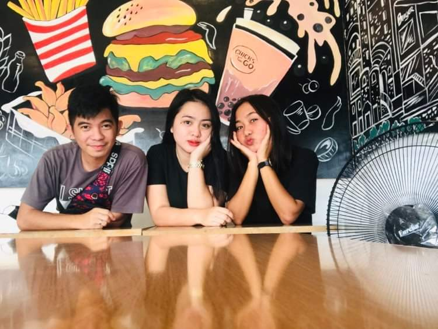

Im Arabella Capacio
Hi Im Arabella Capacio.You can call me bella.I am currently studying as 2nd year college in colegio De santo cristo de burgos.My hobbies are watching movies,eating some frappe shake drinks,cooking and playing volleyball. I believe in the biblical principle on 'what you sow is what you reap'.If we sow good things to others ,then we shall reap better things to us.Im always reminded by my parents,grandmother and grandfather to always study well for us to achive our dreams and goals in life,Challenges and trials are not hindrance to give up but instead it is a moment to continue and go forward in life.
My Family
We are three siblings and my mothers name is Reychelle Abraham and the name of my father is Ariel Capacio.My family isquite complicated for some case because my father and my mother are separated in my childhood days due to family issues.That is why i am raised by my grandmother and grandfather and until now they are supporting me physically and financially in my studies.My mother recently died last september 18 2021 due to chronic lung disease and heart attack.Sadly we mourned so much to our mother and her memories to us will never be forgotten.We are so hurt since my mother died and left us thats why as an elder sister to my two brothers I need to be strong and study well for me to help them and also my father.
My Friends
There is a saying,choose your friends wisely. My friends are always there when times of need and challenges in life.They are always on my side to comfort me and give me the courage always to move one step at a time.I have church friends who guides me spiritually and go nearer to gods.I have school friends who are my companion in my studies in college and we are partners in exchanging information in our schooling. .
